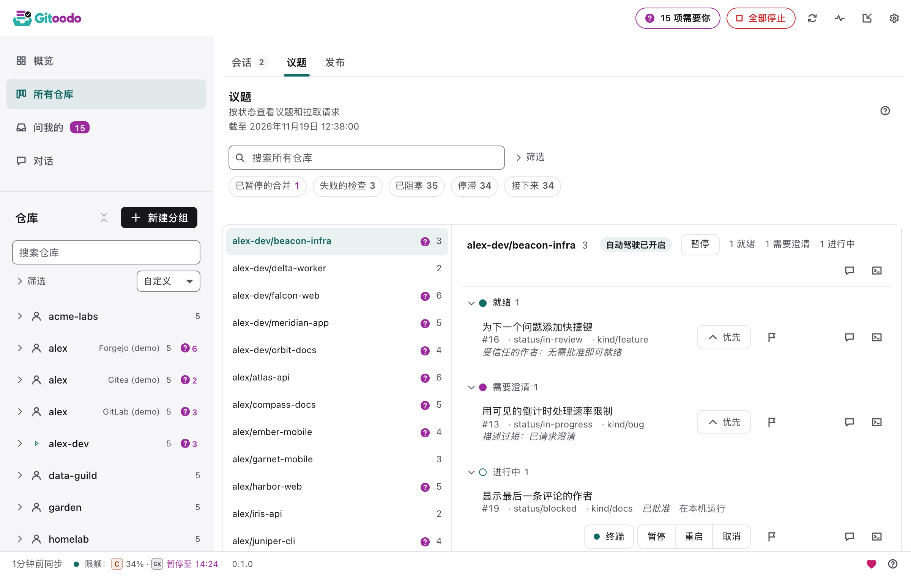

面向用户 · 指南
在自托管的 Forgejo 或 Gitea 上使用编程智能体

Gitoodo 把你自己的 Forgejo 或 Gitea 服务器上的议题变成编程智能体的工作：每个就绪的议题一个工作进程，最后产出一个拉取请求，并以你的仓库允许的方式合并。本指南带你从服务器地址一直走到第一个已合并的拉取请求，并说明自动驾驶需要哪些分支规则。
为什么适合自托管的代码托管平台#
- Forgejo 和 Gitea 与 GitHub 和 GitLab 一样受到支持，可以是任意地址，也可以与其他代码托管平台上的账户并存。
- 中间没有 Gitoodo 服务器：应用及其后台服务直接从你的电脑与你的代码托管平台通信。Gitoodo 会联系哪些地址以及原因，列在网络清单（英文）中。
- 工作进程运行你已在用并已登录的智能体命令行工具（Claude Code、Codex 或 Gemini CLI），使用你自己的订阅。Gitoodo 不需要 API 密钥。
- 令牌只保存在系统密钥存储中，绝不会写入文件或日志。
1. 连接你的账户#
按照入门中的说明安装 Gitoodo，并在引导中选择编排器。然后输入服务器地址和令牌。Forgejo 和 Gitea 无法通过链接预先选好令牌权限，因此令牌助手会打开你服务器上的令牌页面，并列出每一项权限及其访问级别和原因。设置好这些权限后，粘贴令牌并点击检查。按模式列出的完整权限见代码托管平台令牌（英文）。
设置会推荐使用一个单独的工作进程账户，这样代码托管平台上的历史记录显示的是它的名字，而不是你的。如果你的账户是站点管理员，在你确认一份摘要后，Gitoodo 可以替你创建它：一个受限账户，只对你开启的那些仓库拥有写权限，以及一个只带工作进程所需权限的令牌。你也可以继续使用自己的账户。详情见编排器设置（英文）。
2. 选择仓库和标签#
开启 Gitoodo 应该在其中工作的仓库；所有仓库一开始都是关闭的。在写入任何内容之前，Gitoodo 会为每个仓库显示它将保留、重命名或创建哪些标签。它绝不会删除标签。从此以后，标签记录每个议题的状态：ready、in-progress、in-review、needs-human，以及标签中介绍的其他标签。
你还要决定如何处理已经打开的议题：只处理新议题，把现有议题视为就绪，或者先检查它们并询问你。
3. 本地副本#
每个工作进程都在本地副本的独立 worktree 中工作。缺少副本时，Gitoodo 会用已连接的账户把它克隆到自己的克隆文件夹（默认为 ~/gitoodo/repos），因此即使是私有仓库，电脑上也既不需要 SSH 密钥，也不需要 git 凭据助手。如果仓库已经在你的某个文件夹中，就让设置指向那里：Gitoodo 随后只会拉取并添加它自己的 gitoodo/… 分支和 worktree，绝不会检出、重置或清理你的工作树。
4. 开启自动驾驶#
设置会安装后台服务并开启自动驾驶。从此以后，当你信任的人写了一个描述完整的议题，或者议题带有 ready 标签时，它就会变为就绪；其他任何人的议题会先收到一个批准问题。调度器为每个就绪的议题在独立的分支中启动一个工作进程，例如 gitoodo/42-login-fix。侧边栏中仓库所在行的开关可以再次暂停自动驾驶。
5. 合并所需的分支规则#
Gitoodo 使用合并账户进行合并：即工作进程账户，如果没有，则是你自己的账户。在 Forgejo 或 Gitea 中打开设置 → 分支，再打开你的目标分支的规则：
- 合并白名单： 如果启用，合并账户必须在名单上。Gitoodo 中的允许合并账户会把它加进去；这需要你对该仓库拥有管理员权限。
- 状态检查： 列出的检查必须与你的 CI 在拉取请求上实际报告的检查一致。一个被重命名的检查会阻止所有合并。
- 所需批准： 这样每个拉取请求都会等待人来批准。Gitoodo 绝不会批准它自己的工作。
- 分支过时时阻止合并： 没问题，Gitoodo 会自己把分支更新到最新。
你开启一个仓库时，Gitoodo 会立即读取这条规则，并指出任何会让自动驾驶停下的问题，同时给出解决它的操作。更多内容见分支规则（英文）。
只允许快进合并的仓库#
有些自托管的仓库只允许快进合并。Gitoodo 使用你的仓库允许的方式；如果所选方式不被允许，就按 squash、仅快进、合并提交、rebase 的顺序取第一个允许的方式。在仅快进的情况下，它会把落后的工作进程分支变基到目标分支上，再次等待检查，然后合并的正是经过检查的那个提交。真正的冲突绝不会被强行处理：拉取请求会收到一条列出相关文件的评论，议题则等你处理。
先设置好 CI#
如果没有任何检查，Gitoodo 会等待三分钟看是否出现检查，然后合并。所以请为仓库配一个由你的分支规则设为必需的 CI 任务，例如使用 Forgejo Actions 或 Gitea Actions。设置中的设置项目可以添加一个入门用的门禁工作流，你再往里填入真正的检查。合并前还必须满足哪些条件，见安全的自动合并。
开始使用#
下载 Gitoodo，然后按照入门从安装一直走到第一个工作进程。